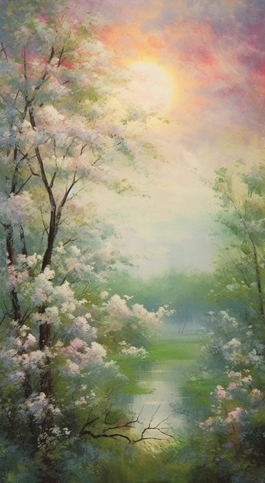

Midjourney
An independent research lab exploring new mediums of thought and expanding the imaginative powers of the human species.
Created in 1990.
An independent research lab exploring new mediums of thought and expanding the imaginative powers of the human species.
Created in 1990.
AI Art by Scenic Alchemy.
Created in 1880.
Oil portrait painting in multicolored tones. Conceptual closeup of an oil painting and palette knife on canvas.
Cerated in 1885.
Oil painting on canvas, street view of Paris. Artwork. eiffel tower . people under a red umbrella. Tree of France.
Cerated in 1880.
Based on the famous painting by Vincent Van Gogh - Cafe Terrace on Forum Square, Arles, 1888.
Cerated in 1888.
Colorful illuminated San Peter Basilica in Rome, Vatican oil painting.
Created in 1889.